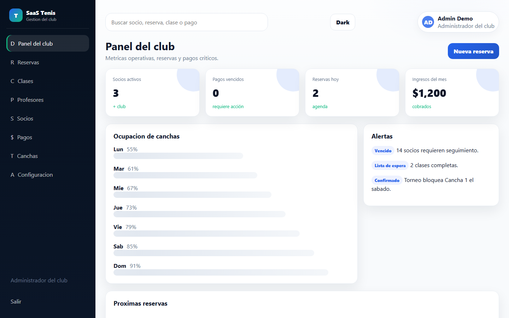
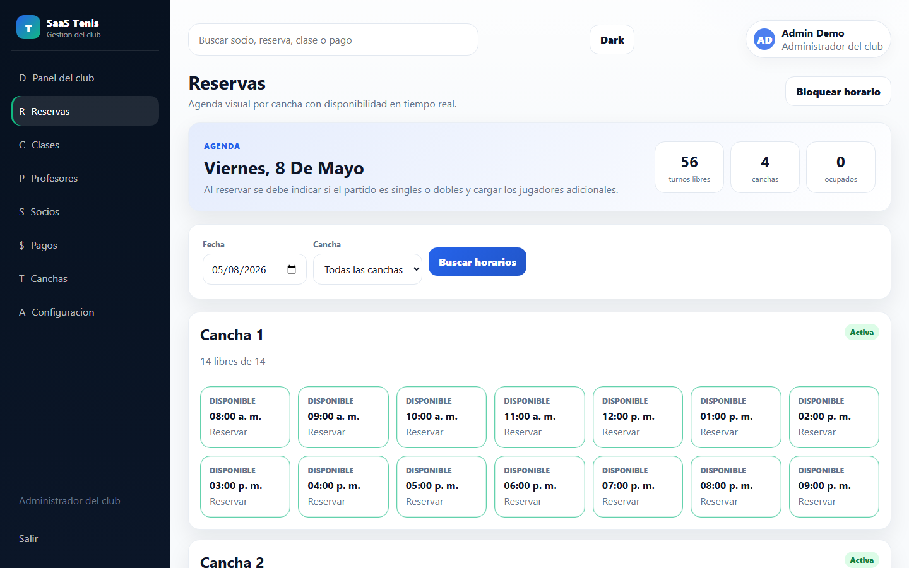
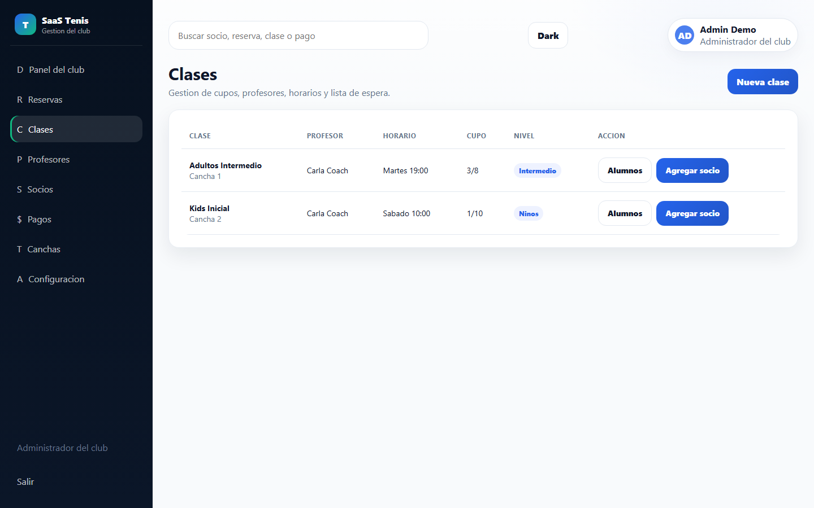
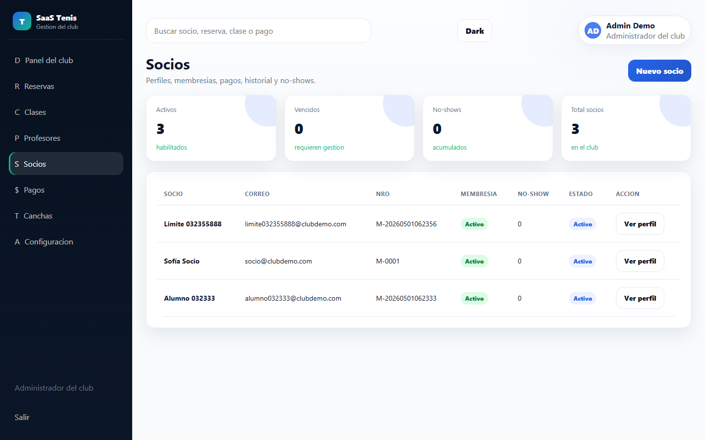
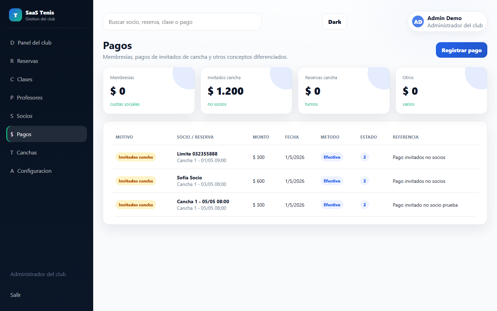
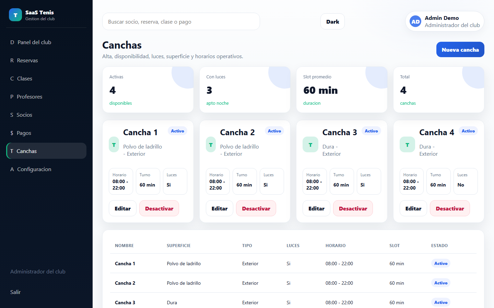
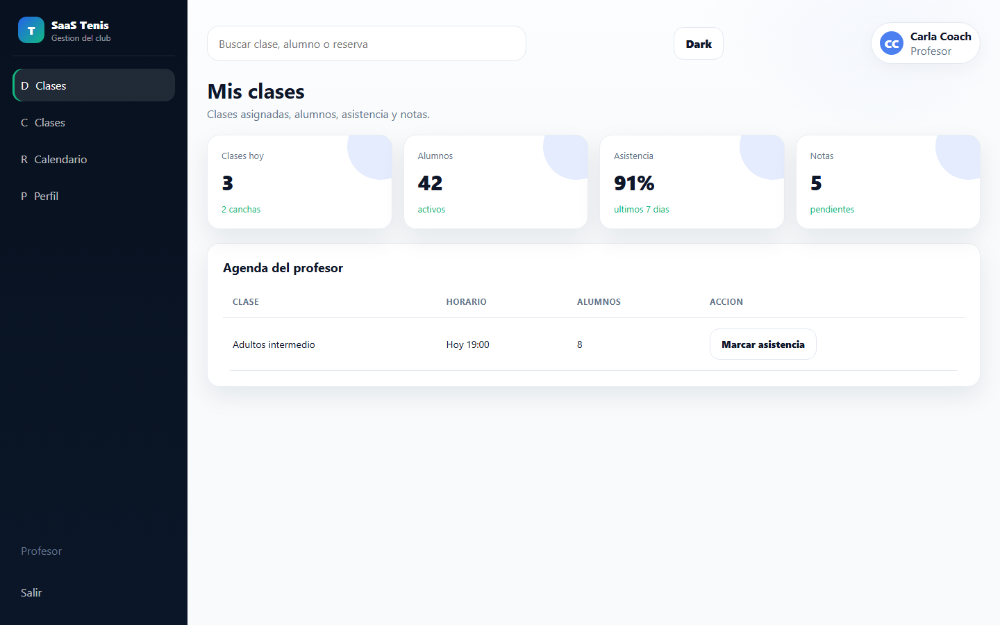
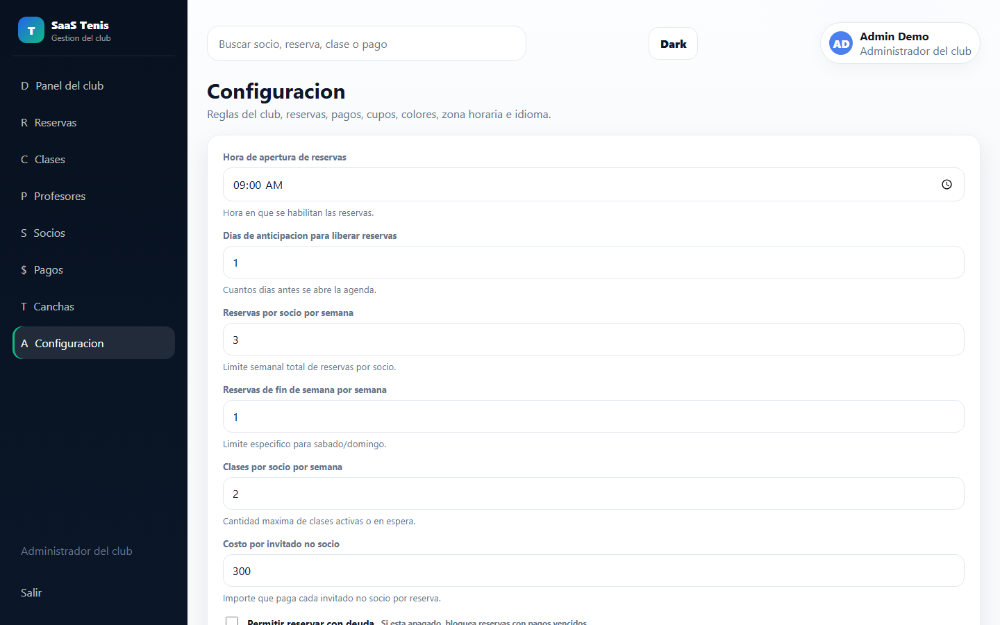

Reservas, clases, socios, pagos, profesores y configuracion multitenant en una sola experiencia SaaS.
Metricas operativas, alertas de pagos, reservas de hoy, ocupacion de canchas y accesos rapidos para operar el dia a dia.

Cada reserva respeta reglas configurables: limite semanal, ventana de apertura, disponibilidad de cancha, membresia activa y pagos.

El club puede crear grupos por nivel, asignar profesor y cancha, controlar inscripciones y permitir que el profesor reserve cupos para alumnos.

El admin puede consultar membresia, pagos, reservas, clases, no-shows, notas y estado de actividad sin mezclar datos de otros tenants.

El sistema distingue cuota social, invitados no socios, reserva de cancha y otros conceptos. Esto hace mas claro el reporte y evita errores contables.

Alta, edicion, superficie, luces, horarios, duracion de turnos y desactivacion con confirmacion.

Cada rol tiene navegacion y permisos propios. El profesor gestiona sus clases, asistencia, alumnos y agenda sin acceso administrativo completo.

Nada importante queda hardcodeado: dias de pago, limite de reservas, limite de clases, invitados, colores, idioma y zona horaria se ajustan por tenant.

Backend .NET por capas, Entity Framework Core Code First, JWT, refresh tokens, roles y aislamiento por tenant usando el header X-Tenant-Slug.
Demo lista para mostrar: reservas, pagos, socios, clases, profesores y configuracion multitenant.